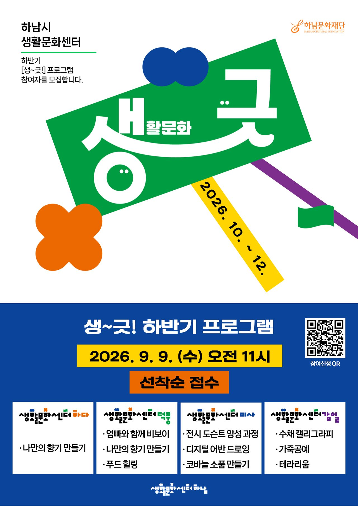
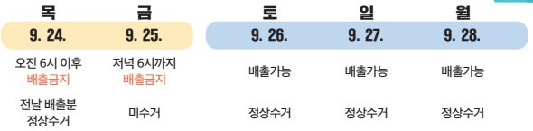

39호 | 2026년 9월 14일 발행
📌 이번 호 주요 목차
 우리동네 국회의원 이광재
우리동네 국회의원 이광재
📰 언론보도
이광재 예결위원장 “국민 세금 실질적 효과가 예산심사 기준” [경기인터뷰]
이광재 국회 예산결산특별위원장(경기 하남갑)이 경기일보 인터뷰를 통해 820조 원 규모의 국가 예산안 심사 방향과 하남시 주요 현안 구상을 밝혔습니다. 이 위원장은 "경기도 31개 시·군의 지역 특성에 맞춘 예산 편성이 필요하다"며, 하남 교산신도시 철도망 확충과 AI 연구캠퍼스 조성, 학교 복합화 사업 등 하남시 개발 및 교통 인프라 강화를 차질 없이 추진하겠다고 강조했습니다.
📌 출처: 경기일보 (김영호 기자)
📝 현장일지
[의정활동] "집도, 삶도 든든한 하남"… 미사강변복지관·신안아파트 재건축 현장 행보
미사강변사회복지관 개관 10주년 축하, 신안아파트 재건축 설명회 방문, 하남시 사회복지협의회 간담회 등 주말 현장 소통 소식을 공유했습니다. 신안아파트 주민들의 평생 자산이 걸린 재건축·재개발 상시 지원조직을 하남시와 협의해 마련하고, 힘들고 어려운 이웃을 지키는 사회복지 현장의 수고를 예산으로 든든히 뒷받침하겠다고 밝혔습니다.
📌 출처: 이광재 공식 네이버 블로그
📝 현장일지
[이광재 칼럼] “벤처 키우려면 기술보증기금 곳간부터 채워야 한다”
AI·바이오·로봇 등 미개척 기술을 보유한 첨단 벤처기업들이 금융 장벽을 넘을 수 있도록 기술보증기금의 재원을 대폭 확충해야 한다는 칼럼을 게재했습니다. 은행 출연요율 인상(0.135%→0.18% 이상), 정부 출연 확대, 벤처금융 실패 평가 구조 개선 등 기술 도전과 성장을 뒷받침할 3대 개혁 방안을 제시했습니다.
📌 출처: 이광재 공식 네이버 블로그 / 지디넷코리아
🎥 현장일지 (영상)
"하남 시민 모두의 교통 환경을 위하여 끝까지 힘을 다하겠습니다" 현장 숏폼
GTX-D 노선 확충 및 황산사거리 교통 체증 개선 등 하남시 주민들의 교통 편의를 대폭 향상시키기 위해 현장에서 적극 행정을 펼치는 이광재 의원의 의정활동 현장 숏폼 영상입니다.
📌 출처: 이광재 공식 유튜브 (이광재 TV)
📰 하남 지역 주요 뉴스
📰 부동산/청약
“15년간 모은 청약통장, 교산신도시 당첨될까요?” [사이다 부동산]
15년간 2,000만 원을 납입한 40대 무주택 4인 가구의 하남 교산신도시 청약 전략 분석이 눈길을 끕니다. 공공분양의 높은 당첨선(2,300만~2,800만 원)을 고려해, 무주택·통장가입 기간 15년 이상 기준 청약가점 69점을 활용한 민간분양 가점제를 동시에 노리는 '투트랙 전략'이 효과적이라는 전문 진단이 전해졌습니다.
📌 출처: 시사저널 (서진형 교수 / 정기환 기자)
📰 교통/수변개발
[현장in] 하남-남양주 잇는 '한강 수변 출렁다리'… 남양주시 재검토에 제동?
하남시 배알미동과 남양주시 와부읍 팔당리를 잇는 530m 보행 전용 한강 출렁다리 조성 사업이 지방선거 이후 남양주시의 신중 재검토 방침에 부딪혀 후속 실무 협의가 지연되고 있습니다. 연임에 성공한 이현재 하남시장은 수변 관광 및 연결성 강화를 위해 추진을 강구하는 반면, 남양주시는 법적 타당성과 한강유역환경청 규제 우려를 이유로 면밀 검토를 진행 중입니다.
📌 출처: 연합뉴스 (이우성 기자)
📰 교통/행정
하남시 "하자 발생한 필름식 자동차번호판 무상 교체 지원"
하남시가 필름 들뜸 및 벗겨짐 등 자재 하자로 식별이 불량해진 태극문양 필름식 자동차번호판의 무상 교체를 추진합니다. 최초 등록 5년 이내 차량은 타 지역 발급 번호판이라도 무상 교체가 가능하며, 하남시 번호판제작소 제작 후 하남시청 차량등록과 방문을 통해 처리받을 수 있습니다.
📌 출처: 뉴시스 (이호진 기자)
💬 하남 맘카페 HOT 이슈
2026년 9월 14일 기준 하남 지역 인터넷 커뮤니티(맘카페)에서 가장 조회수와 댓글이 높았던 핫이슈 TOP 3 소식입니다.
1️⃣ 하남시 초·중·고 통학로 '스마트 가온길 & 노란색 횡단보도' 대폭 확대 소식에 학부모 환호
현황: 하남시 관내 초등학교 및 중학교 주변 스쿨존 내 바닥형 음성안내 보조장치(스마트 가온길) 및 노란색 횡단보도·보행자 신호등 조성을 2026년 하반기 대폭 확대 추진한다는 소식이 학부모 커뮤니티에서 큰 호응을 얻었습니다.
💡 주민 포인트: 어린이 등하굣길 스쿨존 교통사고 예방 및 학부모가 안심할 수 있는 안전한 보행 환경 조성.
💬 주민 반응: "아이 학교 앞에도 노란 횡단보도랑 바닥 신호등이 설치되어 한시름 놓이네요!", "등하굣길 안전장치가 늘어나서 마음이 든든합니다" 학부모 응원 속출.
2️⃣ 정부·하남시 '2026 출산지원금 & 첫만남이용권·부모급여' 지원 확대 소식에 맘카페 관심 집중
현황: 2026년 정부 첫만남이용권(첫째 200만 원, 둘째 이상 300만 원 바우처) 및 부모급여(0세 월 100만 원, 1세 월 50만 원)와 하남시 자체 출산장려금(첫째 50만 원, 둘째 100만 원, 셋째 200만 원 등) 통합 지원 소식이 전해지면서 예비 부모와 출산 가구의 관심이 집중되었습니다.
💡 주민 포인트: 하남시 출산장려금과 정부 첫만남이용권 중복 지원 혜택 및 복지로·동 행정복지센터 원스톱 신청으로 초기 양육비 부담 대폭 완화.
💬 주민 반응: "첫째 출산 예정인데 하남시 장려금이랑 정부 첫만남이용권 둘 다 받을 수 있어 든든하네요!", "신청 절차 깔끔 정리 꿀팁 정보 감사해요" 맘카페 환호.
3️⃣ 감일·위례 신도시 주요 지하철역 연결 시내버스 노선 증차 및 배차간격 단축 소식에 주민 호응
현황: 감일 및 위례 신도시 주민들의 출퇴근 및 학생 통학 불편 해소를 위해 5호선 올림픽공원역, 마천역 및 8호선 복정역을 잇는 주요 시내버스 및 마을버스 노선 증차가 확정되었다는 소식이 전해졌습니다.
💡 주민 포인트: 출퇴근길 버스 대기시간 단축 및 지하철역 환승 편의 대폭 향상으로 지역 교통 복지 개선.
💬 주민 반응: "드디어 감일 버스 배차간격이 좁혀지네요!", "아이들 학원 가고 서울 이동할 때 한결 수월해지겠어요" 감일·위례 맘카페 열띤 호응.
🎭 ALL IN 하남라이프
2026년 9월 14일 기준 한눈에 보는 하남시 최신 문화·행사·추석 시장 이벤트 가이드
🎁 2026.09.16~09.23 | 전통시장/추석
2026년 추석 명절 맞이 하남시 전통시장 경품 행사 & 온누리상품권 최대 30% 환급 이벤트
"풍성한 한가위, 하남시 전통시장에서 장보고 경품과 온누리상품권 혜택 받으세요!"
하남시 관내 전통시장에서 2026년 추석 명절을 맞아 시민과 상인이 함께하는 풍성한 경품 및 온누리상품권 환급 행사를 개최합니다.
🛍️ 신장전통시장 『추석명절 경품 행사』
• 기간: 2026년 9월 22일(화) ~ 9월 23일(수)
• 장소: 신장전통시장 고객센터 1층
• 내용: 3만 원 이상 구매 고객 대상 경품 선착순 지급
🐟 하남수산물전통시장 『온누리상품권 환급행사』
• 기간: 2026년 9월 16일(수) ~ 9월 20일(일) (11:00 ~ 19:00)
• 내용: 당일 구매 금액의 최대 30%를 온누리상품권으로 환급 (1인 20,000원 한도)
— 34,000원 이상 ~ 67,000원 미만: 10,000원 환급
— 67,000원 이상: 20,000원 환급
하남시 관내 전통시장에서 2026년 추석 명절을 맞아 시민과 상인이 함께하는 풍성한 경품 및 온누리상품권 환급 행사를 개최합니다.
🛍️ 신장전통시장 『추석명절 경품 행사』
• 기간: 2026년 9월 22일(화) ~ 9월 23일(수)
• 장소: 신장전통시장 고객센터 1층
• 내용: 3만 원 이상 구매 고객 대상 경품 선착순 지급
🐟 하남수산물전통시장 『온누리상품권 환급행사』
• 기간: 2026년 9월 16일(수) ~ 9월 20일(일) (11:00 ~ 19:00)
• 내용: 당일 구매 금액의 최대 30%를 온누리상품권으로 환급 (1인 20,000원 한도)
— 34,000원 이상 ~ 67,000원 미만: 10,000원 환급
— 67,000원 이상: 20,000원 환급
📌 출처: 신장전통시장상인회 / 하남수산물전통시장상인회 / 하남시청
🚗 2026.09.25~09.26 무료 | 교통/주차
추석 연휴 하남시 덕풍·신장 전통시장 주차장 운영 및 덕풍주차장 무료 개방 안내
"추석 장보기 주차 걱정 끝! 덕풍전통시장 주차장 9월 25일~26일 2일간 무료 개방"
추석 연휴 전통시장을 방문하는 시민분들의 주차 편의를 위해 덕풍·신장전통시장 고객전용주차장을 24시간 운영하며, 덕풍전통시장 주차장은 추석 연휴 기간 무료로 개방합니다.
🅿️ 덕풍전통시장 고객전용주차장
• 위치: 하남시 신장로154번길 57 (130면, 24시간 운영)
• 🎉 무료 개방: 2026년 9월 25일(금) ~ 9월 26일(토) (2일간 전면 무료)
• 문의: 덕풍전통시장상인회 031-794-3753 (관리자 근무 08:00~22:00)
🅿️ 신장전통시장 고객전용주차장
• 위치: 하남시 신장1로3번길 42 (100면, 24시간 운영)
• 이용요금: 최초 30분 600원, 추가 10분당 200원
• 문의: 신장전통시장상인회 031-794-4626 (관리자 근무 06:00~23:00)
추석 연휴 전통시장을 방문하는 시민분들의 주차 편의를 위해 덕풍·신장전통시장 고객전용주차장을 24시간 운영하며, 덕풍전통시장 주차장은 추석 연휴 기간 무료로 개방합니다.
🅿️ 덕풍전통시장 고객전용주차장
• 위치: 하남시 신장로154번길 57 (130면, 24시간 운영)
• 🎉 무료 개방: 2026년 9월 25일(금) ~ 9월 26일(토) (2일간 전면 무료)
• 문의: 덕풍전통시장상인회 031-794-3753 (관리자 근무 08:00~22:00)
🅿️ 신장전통시장 고객전용주차장
• 위치: 하남시 신장1로3번길 42 (100면, 24시간 운영)
• 이용요금: 최초 30분 600원, 추가 10분당 200원
• 문의: 신장전통시장상인회 031-794-4626 (관리자 근무 06:00~23:00)
📌 출처: 덕풍전통시장상인회 / 신장전통시장상인회
🎨 2026.10~12 | 문화/강좌
하남시 생활문화센터 하반기 『생~긋!』 공예·댄스 프로그램 참여자 모집 (선착순)
"일상에 향기와 즐거움을 더하는 하남시 생활문화센터 하반기 강좌!"
하남시 생활문화센터에서 향기, 테라리움, 가죽공예, 코바늘 등 다양한 공예 강좌부터 부모와 아이가 함께 즐기는 비보이 댄스까지 알찬 하반기 『생~긋!』 문화 프로그램을 운영합니다.
📅 운영기간: 2026년 10월 ~ 12월
📝 모집기간: 2026년 9월 9일(수) ~ 선착순 접수 마감
📍 운영장소: 하남시 생활문화센터 4개소 (하다, 덕풍, 미사, 감일)
☎️ 센터별 문의:
— 하다/덕풍 센터: 031-790-7930
— 미사 센터: 031-790-7969
— 감일 센터: 031-790-7927
하남시 생활문화센터에서 향기, 테라리움, 가죽공예, 코바늘 등 다양한 공예 강좌부터 부모와 아이가 함께 즐기는 비보이 댄스까지 알찬 하반기 『생~긋!』 문화 프로그램을 운영합니다.
📅 운영기간: 2026년 10월 ~ 12월
📝 모집기간: 2026년 9월 9일(수) ~ 선착순 접수 마감
📍 운영장소: 하남시 생활문화센터 4개소 (하다, 덕풍, 미사, 감일)
☎️ 센터별 문의:
— 하다/덕풍 센터: 031-790-7930
— 미사 센터: 031-790-7969
— 감일 센터: 031-790-7927

📌 출처: 하남문화재단 / 하남시 생활문화센터
🏛️ 2026.09.19~09.20 | 역사/축제
2026 하남 이성산성 문화제 《백제의 숨결, 이성산성 가을 나들이》 개최
"하남의 소중한 역사 유적 이성산성에서 펼쳐지는 가을 축제!"
하남시 대표 역사 문화 축제인 '2026 하남 이성산성 문화제'가 오는 9월 19일부터 펼쳐집니다. 이성산성 야외 투어, 어린이 백제 역사 체험, 하남 여행 버스투어 등 풍성한 가족 프로그램이 준비되어 있습니다.
📅 일시: 2026년 9월 19일(토) ~ 9월 20일(일)
📍 장소: 하남 이성산성 및 하남시 주요 역사 문화 거점
🏛️ 문의: 하남문화재단 / 하남시 문화체육과
하남시 대표 역사 문화 축제인 '2026 하남 이성산성 문화제'가 오는 9월 19일부터 펼쳐집니다. 이성산성 야외 투어, 어린이 백제 역사 체험, 하남 여행 버스투어 등 풍성한 가족 프로그램이 준비되어 있습니다.
📅 일시: 2026년 9월 19일(토) ~ 9월 20일(일)
📍 장소: 하남 이성산성 및 하남시 주요 역사 문화 거점
🏛️ 문의: 하남문화재단 / 하남시 문화체육과
📌 출처: 하남시청 / 하남문화재단
🏛️ 공공기관 소식지
2026년 9월 14일 기준 하남시청 및 보건소 공공기관 주요 안내입니다.
🏥 하남시보건소 | 2026.09.24~09.27
2026년 추석 명절 연휴 문 여는 병·의원 및 약국 운영 안내
하남시보건소에서 2026년 추석 명절 연휴 기간 중 시민들의 응급 상황 및 의료 이용 불편을 최소화하기 위해 문 여는 병·의원 및 약국(비상진료기관)을 운영합니다.
운영 기간: 2026년 9월 24일(목) ~ 9월 27일(일)
확인 방법:
① 응급의료포털(www.e-gen.or.kr)에서 하남시 문 여는 의료기관/약국 검색
② 안내 콜센터 문의: 129(보건복지상담), 119(구급상황관리), 120(경기도 콜센터)
※ 방문 전 의료기관 운영 여부를 반드시 전화로 사전 확인하시기 바랍니다.
운영 기간: 2026년 9월 24일(목) ~ 9월 27일(일)
확인 방법:
① 응급의료포털(www.e-gen.or.kr)에서 하남시 문 여는 의료기관/약국 검색
② 안내 콜센터 문의: 129(보건복지상담), 119(구급상황관리), 120(경기도 콜센터)
※ 방문 전 의료기관 운영 여부를 반드시 전화로 사전 확인하시기 바랍니다.
📌 출처: 하남시보건소 보건정책과
💉 하남시보건소 | 2026.09~
2026-2027절기 인플루엔자(독감) 및 코로나19 무료 예방접종 실시 안내
하남시보건소에서 2026-2027절기 독감 및 코로나19 무료 예방접종을 실시합니다. 접종 쏠림 방지를 위해 연령별·대상별 접종 일자가 상이하오니 사전 확인 후 지정 의료기관을 방문해 주세요.
접종 백신: 인플루엔자 3가 백신 / 코로나 XFG 백신 (화이자, 모더나)
접종 대상: 65세 이상 어르신(독감+코로나 동시접종 가능), 어린이, 임신부, 취약계층, 60~64세
접종 장소: 관내 지정 위탁의료기관 (하남시보건소 자체 접종은 실시하지 않음)
준비물: 신분증, 아기수첩, 임신확인서, 수급자/장애인 증명서 등 대상별 확인서류
문의: 하남시보건소 예방접종실 031-790-6575 / 미사보건센터 031-790-6560
접종 백신: 인플루엔자 3가 백신 / 코로나 XFG 백신 (화이자, 모더나)
접종 대상: 65세 이상 어르신(독감+코로나 동시접종 가능), 어린이, 임신부, 취약계층, 60~64세
접종 장소: 관내 지정 위탁의료기관 (하남시보건소 자체 접종은 실시하지 않음)
준비물: 신분증, 아기수첩, 임신확인서, 수급자/장애인 증명서 등 대상별 확인서류
문의: 하남시보건소 예방접종실 031-790-6575 / 미사보건센터 031-790-6560

📌 출처: 하남시보건소 보건정책과
© 2026 우리동네 진짜일꾼 이광재